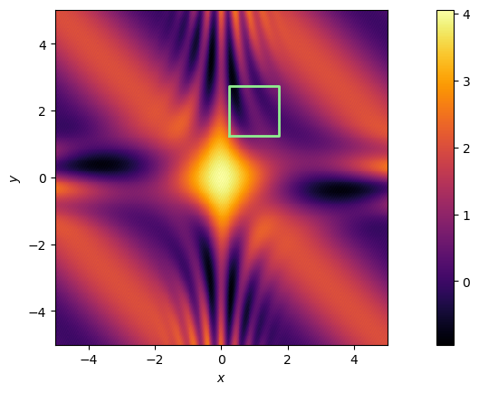
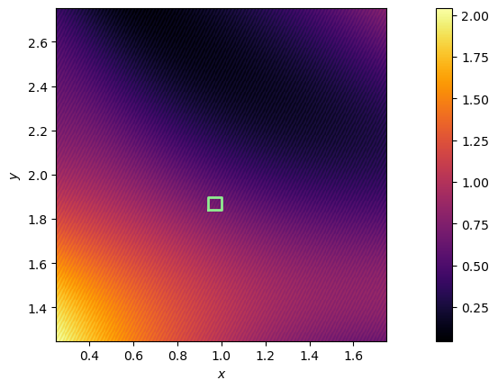
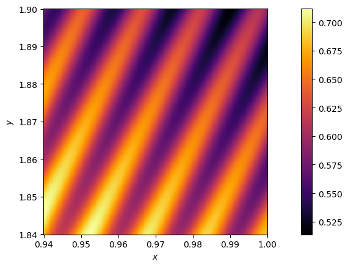
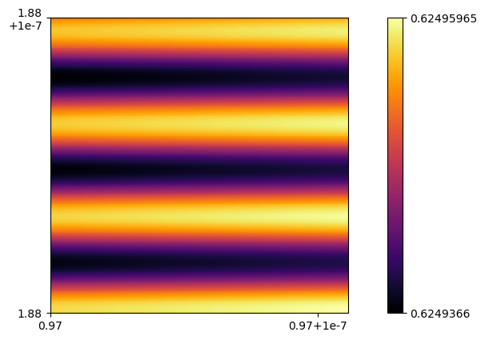
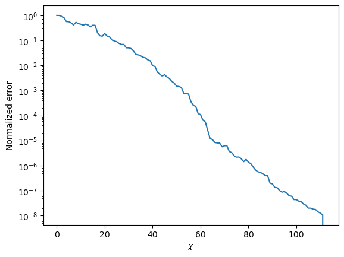
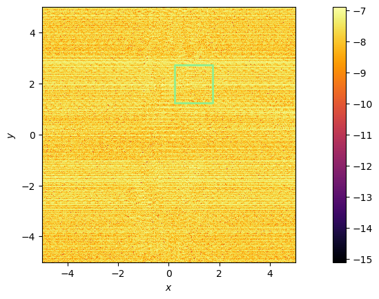
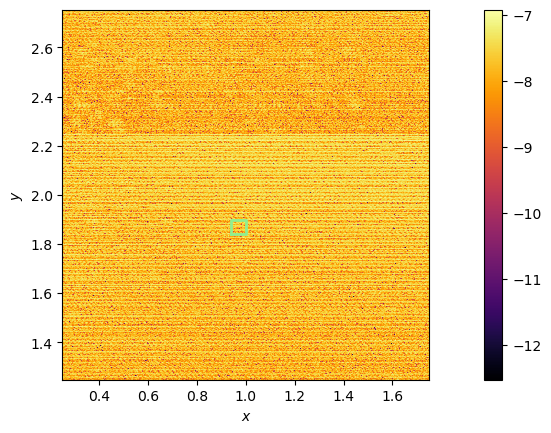
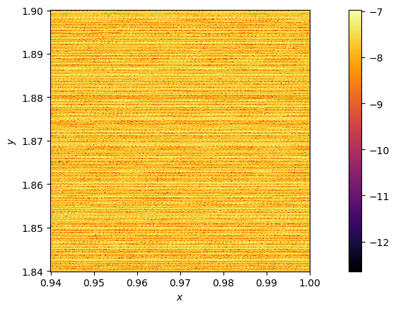
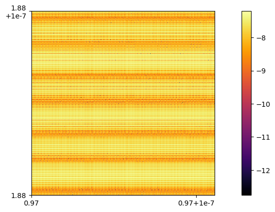

Click here to download the notebook locally.
Quantics TCI of multivariate funciton#
import TensorCrossInterpolation as TCI
import QuanticsGrids: DiscretizedGrid, origcoord_to_quantics, origcoord_to_grididx
using QuanticsTCI
using PythonPlot: pyplot as plt
using PythonPlot: Figure
using PythonCall: Py
_display(fig::Figure) = isinteractive() ? (fig; plt.show(); nothing) : Base.display(fig)
_display(fig::Py) = _display(Figure(fig))
# pythonplot() # use pythonplot backend for plotting
using LaTeXStrings
Artificial function with widely different length scales#
f(x, y) = (exp(-0.4 * (x^2 + y^2)) + 1 + sin(x * y) * exp(-x^2) +
cos(3 * x * y) * exp(-y^2) + cos(x + y)) + 0.05 * cos(1 / 0.001 * (0.2 * x - 0.4 * y)) + 0.0005 * cos(1 / 0.0001 * (-0.2 * x + 0.7 * y)) + 1e-5 * cos(1 / 1e-7 * (20 * x))
R = 40
gr = DiscretizedGrid{2}(R, (-5, -5), (5, 5))
DiscretizedGrid{2}(40, (-5.0, -5.0), (5.0, 5.0), 2, :fused, false)
function myplotheatmap(ax, func, xlim::Tuple, ylim::Tuple; xlim_box=nothing, ylim_box=nothing, cmap="inferno")
x = LinRange(xlim..., 400)
y = LinRange(ylim..., 400)
s = ax.pcolormesh(x, y, func.(x, y'), cmap=cmap)
if !isnothing(xlim_box) && !isnothing(ylim_box)
ax.plot(
[xlim_box[1], xlim_box[2], xlim_box[2], xlim_box[1], xlim_box[1]],
[ylim_box[1], ylim_box[1], ylim_box[2], ylim_box[2], ylim_box[1]],
color="lightgreen", lw=2, label="",
)
end
plt.colorbar(s, ax=ax, orientation="vertical", pad=0.11)
ax.set_xlabel(raw"$x$")
ax.set_ylabel(raw"$y$")
ax
end
function myplotheatmap(func, xlim::Tuple, ylim::Tuple; xlim_box=nothing, ylim_box=nothing, cmap="inferno")
fig, ax = plt.subplots()
myplotheatmap(ax, func, xlim, ylim; xlim_box, ylim_box, cmap)
_display(fig)
end
myplotheatmap (generic function with 2 methods)
myplotheatmap(f, (-5, 5), (-5, 5), xlim_box=(0.25, 1.75), ylim_box=(1.25, 2.75), cmap="inferno")

myplotheatmap(f, (0.25, 1.75), (1.25, 2.75), xlim_box=(0.94, 1.0), ylim_box=(1.84, 1.9))

myplotheatmap(f, (0.94, 1.0), (1.84, 1.9), xlim_box=(0.97, 0.97 + 1e-7), ylim_box=(1.88, 1.88 + 1e-7))

fig, ax = plt.subplots()
xs = LinRange(0.97, 0.97 + 1e-7, 400)
ys = LinRange(1.88, 1.88 + 1e-7, 400)
s = ax.pcolormesh(xs, ys, f.(xs, ys'), cmap="inferno")
cbar = fig.colorbar(s, ax=ax, orientation="vertical", pad=0.1)
cbar.ax.set_yticks([0.6249366, 0.62495965])
cbar.ax.set_yticklabels(["0.6249366", "0.62495965"])
ax.set_xticks([0.97, 0.97 + 0.9e-7])
ax.set_xticklabels([0.97, "0.97+1e-7"])
ax.set_yticks([1.88, 1.88 + 1e-7])
ax.set_yticklabels([1.88, "1.88" * "\n" * "+1e-7"])
_display(fig)

# Construct 2D quantics
fig, ax = plt.subplots()
qtci, ranks, errors = quanticscrossinterpolate(Float64, f, gr)
ax.plot(qtci.tci.pivoterrors ./ qtci.tci.maxsamplevalue)
ax.set_xlabel(L"\chi")
ax.set_ylabel("Normalized error")
ax.set_yscale("log")
_display(fig)

# Function that evaluates log10 of the interplation error at (x, y)
errflog10(x, y) = log10(abs(f(x, y) - qtci(origcoord_to_grididx(gr, (x, y)))))
eps = 1e-10
myplotheatmap(errflog10, (-5, 5 - eps), (-5, 5 - eps), xlim_box=(0.25, 1.75), ylim_box=(1.25, 2.75))

myplotheatmap(errflog10, (0.25, 1.75), (1.25, 2.75), xlim_box=(0.94, 1.0), ylim_box=(1.84, 1.9))

myplotheatmap(errflog10, (0.94, 1.0), (1.84, 1.9), xlim_box=(0.97, 0.97 + 1e-7), ylim_box=(1.88, 1.88 + 1e-7))

fig, ax = plt.subplots()
xs = LinRange(0.97, 0.97 + 1e-7, 400)
ys = LinRange(1.88, 1.88 + 1e-7, 400)
s = ax.pcolormesh(xs, ys, errflog10.(xs, ys'), cmap="inferno")
fig.colorbar(s, ax=ax, orientation="vertical", pad=0.11)
ax.set_xticks([0.97, 0.97 + 0.9e-7])
ax.set_xticklabels([0.97, "0.97+1e-7"])
ax.set_yticks([1.88, 1.88 + 1e-7])
ax.set_yticklabels([1.88, "1.88" * "\n" * "+1e-7"])
_display(fig)

Low-rank structure in Fourier transform matrix#
import TensorCrossInterpolation as TCI
import QuanticsGrids as QD
R = 20 # R must be even
# 1D grid with 2^R points starting at 0
grid = QD.InherentDiscreteGrid{1}(R, 0)
# Fourier transform matrix
fkm(k::Int, m::Int) = exp(-2π * im * k * m / 2^R) / 2^(R ÷ 2)
function fq(fused_quantics_index::Vector{Int})
# Compute quantics indices for k and m
kq, mq = QD.unfuse_dimensions(fused_quantics_index, 2)
reverse!(kq) # bit reversal
return fkm(
QD.quantics_to_origcoord(grid, kq),
QD.quantics_to_origcoord(grid, mq)
)
end
localdims = fill(2^2, R)
firstpivots = [ones(Int, R)]
qtci, ranks, errors = TCI.crossinterpolate2(ComplexF64, fq, localdims, firstpivots; tolerance=1e-8, verbosity=1, loginterval=1)
fig, ax = plt.subplots()
ax.plot(qtci.pivoterrors, label="pivot errors")
ax.set_yscale("log")
ax.legend()
_display(fig)
iteration = 1, rank = 10, error= 1.690286197068603e-12, maxsamplevalue= 0.0009765625, nglobalpivot=5
Rejected 5 global pivots added in the previous iteration, errors are [7.095029957328877e-13, 6.286270126560936e-14, 4.982319182374271e-13, 1.3312320966396e-12, 7.392687229187235e-13]
iteration = 2, rank = 10, error= 9.409570586349486e-12, maxsamplevalue= 0.0009765625, nglobalpivot=0
iteration = 3, rank = 10, error= 9.409570586349486e-12, maxsamplevalue= 0.0009765625, nglobalpivot=0
iteration = 4, rank = 10, error= 9.409570586349486e-12, maxsamplevalue= 0.0009765625, nglobalpivot=0